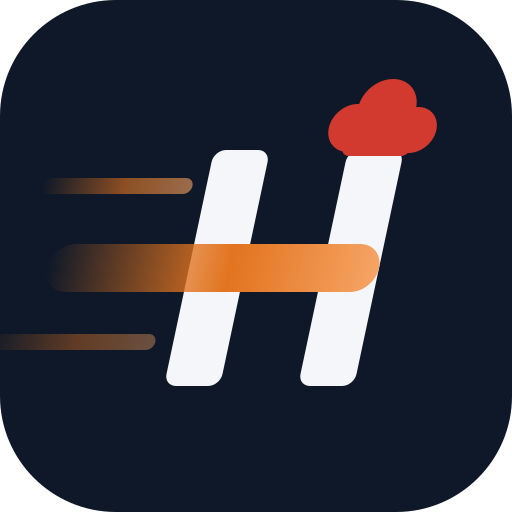

AI秘書 ハヤテ ／ 九州の小さなお店・会社へ
お店のAI事務サポート
SNSの投稿文、お知らせ、チラシの文、お客様への返信。毎日の「書く仕事」を、AIで作れる仕組みにしてお渡しします。使い方はスマホで、その場でお教えします。
こんな方に
よく伺う困りごと
- SNSを続けられない何を書けばいいか分からず、更新が止まっている
- 文章に時間がかかるお知らせやメニューの説明を書くのに、営業後の時間が消える
- 外国のお客様が増えた案内やメニューを英語などでも出したい
ほかにも
会社の「困った」をAIで軽くできること
- 見積書・請求書・納品書ひな形を作り、品目と数量を入れるだけで書類ができる形にします
- 口コミ・問い合わせへの返信Googleの口コミ、予約やよくある質問への返事の文をすぐ作れるようにします
- 求人の原稿求人票・求人サイトの文を、伝わる書き方で作ります
- マニュアル・引き継ぎ書口で教えていた手順を、新人さんが読める手順書にまとめます
- 会議のメモ・議事録録音やメモから、決まったことと次にやることを1枚にまとめます
- 補助金・助成金の下書き申請書の文の下書きと、必要な書類の一覧づくりをお手伝いします（申請はお店側）
- 売上・在庫の表の整理ばらばらの記録を表にまとめ、毎月の数字を見やすくします
- 契約書・案内文の要点長い書類の大事な点を短くまとめ、確かめる所に印をつけます（法律の判断は専門家へ）
- 社内の外国人スタッフへの連絡シフトや注意事項を、やさしい日本語や母国語で伝えます
料金
メニュー
| メニュー | 中身 | 料金（税込） |
|---|---|---|
| AI業務診断 | 困りごとを30分伺い、AIで楽になる作業を3つ、紙1枚にまとめます | 無料 |
| AIスタートパック | 診断＋よく使う文書3つのひな形づくり＋60分の使い方レクチャー＋2週間の質問 | 29,800円 |
| AI事務サポート | 毎月8件までの制作代行（投稿文・チラシ文・案内文・翻訳1枚・議事録）と月1回の報告 | 月 19,800円 |
| SNS投稿 1か月分 | 文と画像の案を12本 | 14,800円 |
| チラシ・メニュー表 | 文案とデザイン（印刷はお店側） | 9,800円 |
| AI活用研修 | 会社・団体向け。全6回・1回2時間（計12時間）。講師は提携先 | お見積り |
適格請求書（インボイス）を発行できます。
流れ
始めるまで
- 無料診断（30分）お店に伺うか、電話でお話を聞きます。
- 紙1枚のご提案AIで楽になる作業を3つ、効果と手間を添えてお渡しします。
- スタートパックよく使う文書のひな形を作り、スマホで使えるところまで一緒に進めます。
- 続けるなら月額で制作をこちらで引き受ける形もお選びいただけます。
会社・団体向け
AI活用研修（リスキリング研修）
AIを「使える人」から、AIと働く組織へ。全6回・1回2時間（計12時間）で、AIの仕組みを知り、自社用に育て、チームで使えるところまで進めます。講師は提携先の MYCELIUM INTELLIGENCE。お申し込みとご相談の受付は KEITO です。
- 26.7%生成AIを使ったことがある人（日本）米国 68.8%・中国 81.2%・ドイツ 59.2%
- 49.7%活用の方針やルールがある企業（日本）残りの会社では「使っていいのか」「何を入れてはいけないのか」が決まっていない
- 1回の講習で終わる研修が多い操作を覚えても翌週には元のやり方に戻る。AIが会社のことを覚えていないから
出典: 総務省「令和7年版 情報通信白書」第1部第2章（個人は2024年度調査。企業は「積極的に活用している」「利用ルールを定めて利用している」の合計）。3つ目は講師の見立てです。
研修の考え方
AIは「毎回はじめましての天才」。
決まりと記憶を渡すと、会社の一員になる。
- 仕組みを知るAIは会話が終わると忘れ、学習は止まっていて、それらしい嘘をつくこともある。限界を知ると、頼み方が変わります
- 「憲法」＝毎回読ませる決まり誰の仕事を、どんな基準で、何をしてはいけないか。1枚のファイルに書き、AIが毎回最初に読みます
- 「脳」＝育っていく記憶調べたこと・決めたこと・失敗をノートに積み、リンクでつなぐ。使うほど会社に詳しくなります
全6回の流れ
知る → 育てる → 組織で使う
- AIは脳ではない（講義・実演）冒頭でAIに「調べる→学ぶ→計画→制作」を丸ごと頼み、講義中に成果物ができるまでを見届けます。並行して、人間の脳とAIの仕組み・限界を解説
- 憲法と脳をつくる（講義・実習／PC持参）自分用の「憲法」を書き、「脳」（記憶ノート）を作ります。講師が2か月育てた脳と並べ、精度の差を実演で比べます
- 組織の脳と、つながるAI（講義・実習）チームで共有する脳の設計。MCP・APIで社内の道具とつなぐと何ができるか。情報漏えいなどのリスクと避け方も
- 実践① グループで作る（グループワーク）自社の実際の業務を題材に、班ごとに成果物を作ります。講師が巡回し、要所でコツを全体に共有
- 実践② 仕上げと補習（グループワーク・補習）グループワークの続き。つまずいた人の個別の補習も同時に進めます
- 総仕上げ・修了（全体制作・反省会）全員で1つの計画を立てて制作。反省会で「できるようになったこと」と「業務での使い道」を一人ずつ発表。受講者専用のコミュニティ（参加自由）に招待して修了
第1回の冒頭でAIに頼む仕事の例：「御社の業界で、AIで減らせる仕事」を公的機関や企業の一次情報から調べ、資料にまとめ、どこに確信がないかまで報告させます（途中経過は講義の合間にスクリーンで一緒に確認）。講師の「脳」は2026年9月11日開始で、ノート430・リンク10,737本（2026年11月8日 講師の環境で計測）。
業種別の組み立て例
6回すべてを、御社の実際の仕事に結びつけます
上の流れを土台に、各回の題材を御社の業務に合わせて組み直します。たとえば建設会社さまなら、毎日の書類仕事を6回で6つの「すぐ使える型」にします。
- 工事日報・作業報告音声メモから日報の文章にする。自社の日報のひな形を1つ作ります（現場監督・職長）
- 施工計画書・作業手順書過去の自社の書類をもとに、次の工事の計画書の骨組みを作ります（現場監督・技術者）
- 安全書類KY活動の記録や新規入場者教育の資料を作る・直す。教育用の1枚を作ります（安全担当・職長）
- 外国人作業員への安全指示現場の決まりを、やさしい日本語や英語・ベトナム語・インドネシア語などにします。訳は必ず人が確認します（安全担当・事務）
- 見積・議事録・お礼状発注者との打ち合わせ議事録の型と、見積書の添え状を作ります（事務・営業）
- 社内ルールと改善計画「AIを使ってよい書類・使わない書類」の社内ルールを1枚にし、各自の業務の改善計画を発表します（全員）
建設コンサルタント・測量会社さまなら
報告書・調書・説明資料など「文章を書く時間」が長い仕事を、6回で6つの型にします。
- 点検・調査の報告書橋・道路・下水道などの点検で、現場メモや写真の説明から「所見の文」を下書きする型を作ります（技術者・調査担当）
- 補償の調書と説明の文物件の状態の記述と、地権者さまへの説明の文の型を作ります（補償担当）
- 住民説明の資料設計の説明を、専門用語を減らした言い方に直した1枚を作ります（設計担当）
- 議事録・協議記録発注者との打ち合わせの議事録・協議記録・質問書の型を作ります（技術者・事務）
- 根拠メモと手順書積算・数量の根拠メモと、測量・ドローンなどの社内手順書を1つ改訂します（測量・積算担当）
- 社内ルールと改善計画「AIに入れてよい書類・入れない書類」の社内ルールを1枚にし、各自の業務の改善計画を発表します（全員）
製造業の会社さまなら
作業日報、作業手順書、品質の記録、お客さまへの回答。ものづくりの現場の「書類の下書き」を、6回で6つの型にします。
- 社内ルールと作業日報図面・お客さまの情報・未発表の価格をAIに入れない決まりを作り、日報のメモ書きを報告の形に整える型を作ります（全員）
- 作業手順書・作業標準書現場の口頭の説明やメモから、番号つきの手順・注意点・確認欄のある手順書の下書きを作る型を作ります（製造リーダー）
- 品質の記録・不具合の報告事実のメモから、報告書の骨組み（起きたこと・原因の候補・対策・再発防止）を作る型を作ります。原因の判断は人がします（品質担当）
- 見積の添え状・納期の回答お客さまの問い合わせから、確認したいことの一覧と返信の下書きを作る型を作ります（営業・事務）
- 外国人スタッフ向けの作業指示やさしい日本語と母国語の掲示の下書きを作ります。訳は必ず人が確認してから使います（製造リーダー・事務）
- 社内教育と振り返り先輩のコツを新人向けQ&Aにまとめ、6回で作った型を社内の決まりにします（全員）
AIの文は下書きです。寸法・規格・法令・数字は必ず担当の方が確かめる進め方にします。図面・発注者の資料・個人情報・入札前の金額をAIに入れない手順は、第1回からお伝えします。介護・小売・飲食など、ほかの業種もヒアリングのうえ同じように組み立てます。
修了するとできること
「AIに聞ける」ではなく、「AIと仕事を回せる」
一人で
- AIの得意・不得意を、仕組みから説明できる
- 「調べる→学ぶ→計画→制作」の頼み方で成果物を作れる
- 自分の「憲法」と「脳」を持ち、使いながら育てられる
- 入れてはいけない情報と、安全な使い方を判断できる
組織で
- チームで共有する脳の置き方と、更新のルールを決められる
- MCP・APIで社内の道具とAIをつなぐ構想を描ける
- 自社の業務を題材にした成果物が、研修中に1つ以上できている
- 修了後も続けられる、受講者専用のコミュニティに参加できる
講師（提携先）
Justin K Hata
MYCELIUM INTELLIGENCE 代表。業務をヒアリングし、ITで最適化する人。Apple（AppleCare 日本）Quality Lead（2015〜2018）を経て独立し、業務改善コンサルタントとして活動。現在は自分の複数の事業を、AIと組んだ仕組みで運営しています。
研修の題材はすべて実務から：飲食店の広告運用と来店の計測／海外顧客向けの資料・サイトの多言語化／デザインと動画の制作の自動化／調査レポート・数字の表・スライドの一括制作。
同じシリーズで「ITセキュリティ」「Web広告とオンライン営業」のコースを準備中です。
実施について
研修の条件と、お申し込みまで
- 時間
- 1回2時間 × 6回（計12時間）
- 形式
- 集合研修。第2回以降はPC持参を推奨
- 人数
- ご相談ください
- 使うAI
- ご相談ください（例: Claude のチーム向けプラン）
- 料金
- 人数と内容に合わせてお見積りします
- 受付
- KEITO（下のボタンかお問い合わせから）
- ヒアリング業務・人数・使える道具を伺います。
- 題材を決める御社向けのデモのテーマと、グループワークの題材を決めます。
- 日程とご契約日程を確定し、ご契約いただきます。
- 第1回の開始講師が伺い、研修を始めます。
助成金について
国の助成金を使える場合があります
雇用保険に入っている会社の研修は、厚生労働省の「人材開発支援助成金（事業展開等リスキリング支援コース）」の対象になる場合があります。対象になるかの確認と申請の手続きは、提携の社会保険労務士が行います。
- 助成の目安
- 中小企業は研修の経費の75%と、受講時間1時間あたり1,000円（1人1研修の経費の上限あり）。大企業は60%と500円
- 研修の中身
- 御社の業務にAIを使う形で組み立てます（2026年8月から、業務に結びつかない一般的なAI講習は対象外）
- 計画の届出
- 研修を始める日の1か月前までに届け出が要ります。今年度の制度で年明けに始めるなら、12月上旬までのご相談をおすすめします
- 期間
- 令和8年度（2027年3月）までの時限の制度です
- お支払い
- 研修費はいったん会社に全額お支払いいただき、修了後に申請します
審査があり、要件を満たさない場合は支給されません。受講者個人に費用の一部を負担させると対象外になるなど、細かな決まりがあります。厚生労働省の制度のページ
よくある質問
ご質問
パソコンがなくても使えますか？
はい。スマホだけで使える形でお渡しします。
お客様の個人情報をAIに入れても大丈夫ですか？
お客様の名前や連絡先など、大事な情報はAIに入れない使い方をお伝えします。
どの地域まで来てもらえますか？
筑後地方と福岡市内は伺います。それ以外の地域はオンラインで対応します。
無料診断のあと、必ず申し込む必要がありますか？
ありません。診断の紙はそのままお使いいただけます。
AI活用研修は誰が教えますか？
講師は提携先の MYCELIUM INTELLIGENCE（Justin K Hata）です。お申し込み・日程の調整・ご質問の窓口は KEITO が受け持ちます。
AI活用研修に助成金は必ず出ますか？
必ずではありません。対象になるかは、提携の社会保険労務士が会社の状況を伺って確認します。届け出は研修開始の1か月前までに要るので、日程を決める前にご相談ください。